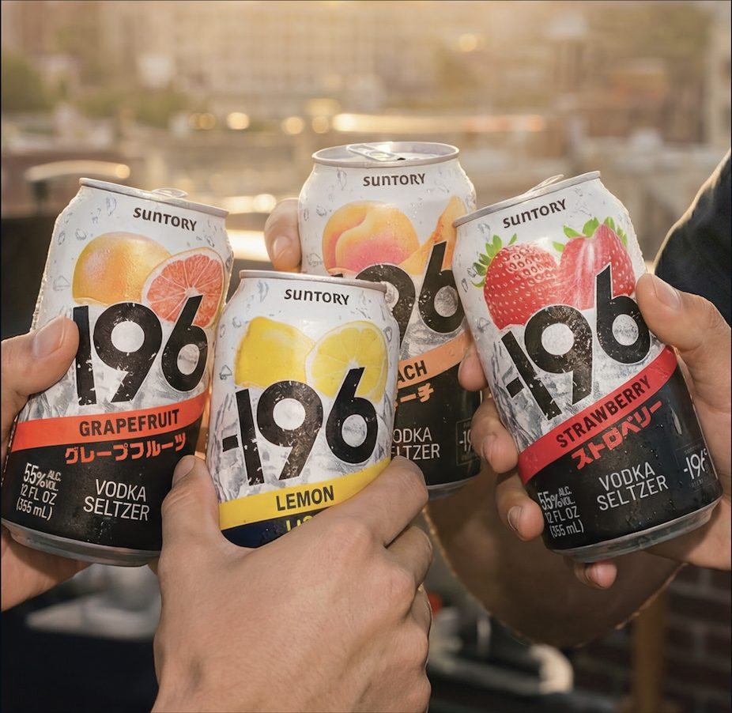
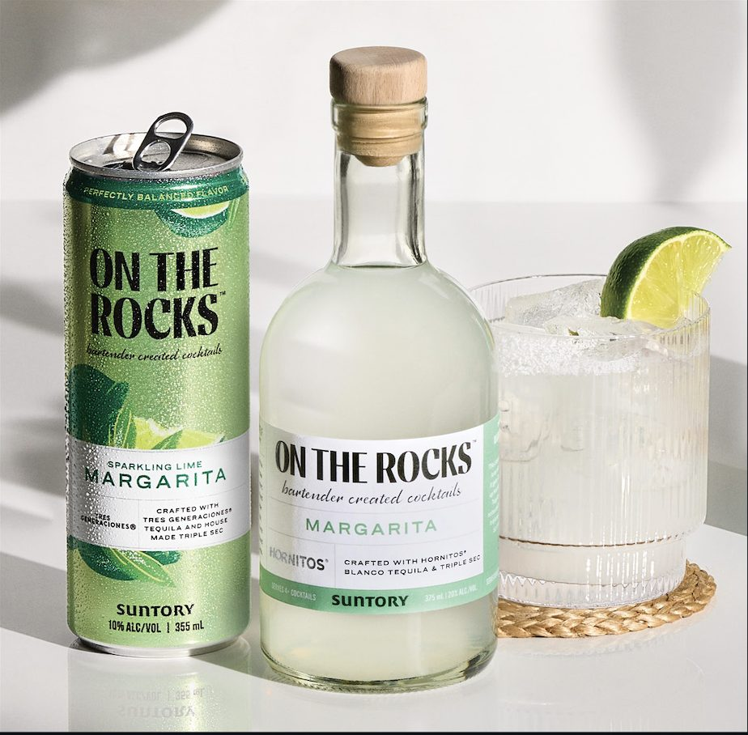
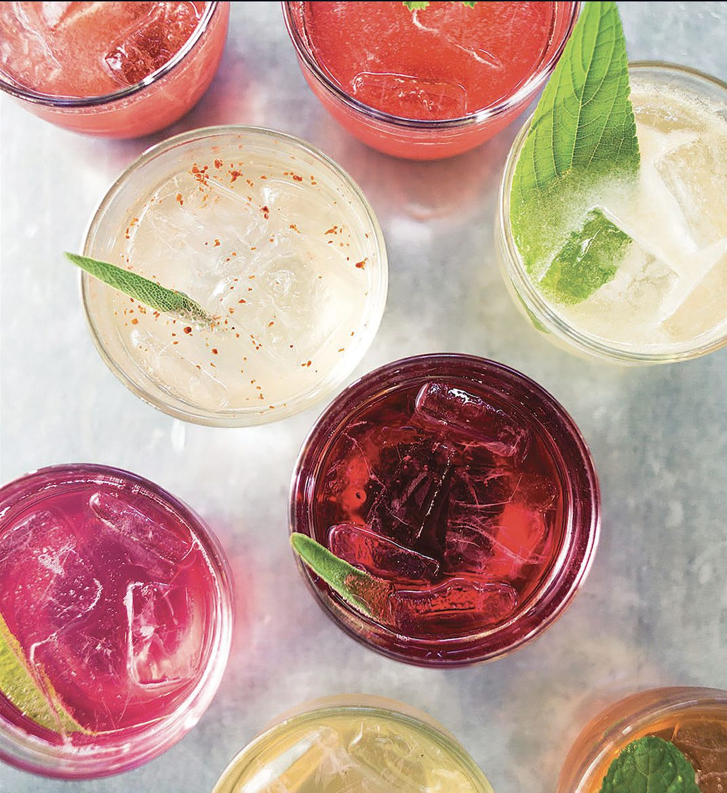

Convenience has evolved. Great drinks are now available instantly, without sacrificing quality. What was once considered a shortcut has become a standard. On The Rocks Cocktails and -196 bring flavor, convenience, and refreshment into moments that don’t require preparation but still deserve a great drink. Effortless, but still delivering the experience and quality consumers deserve and expect.

-196 Vodka Seltzer
Vibrant fruit flavors and effortless refreshment, designed for gatherings where convenience matters but flavor still leads.
On The Rocks Cocktails
Classic cocktails, precisely made and ready to pour. On The Rocks delivers bar-quality cocktails across a full range of serves, bringing consistency, craftsmanship, and ease to any moment.
- Margarita
- Cosmopolitan
- Old Fashioned
- Espresso Martini
- Lemon Drop Martini
- Whiskey Sour
- Strawberry Daiquiri
- Blue Hawaiian
- Jalapeño Pineapple Margarita

